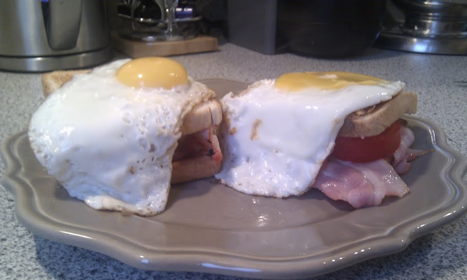
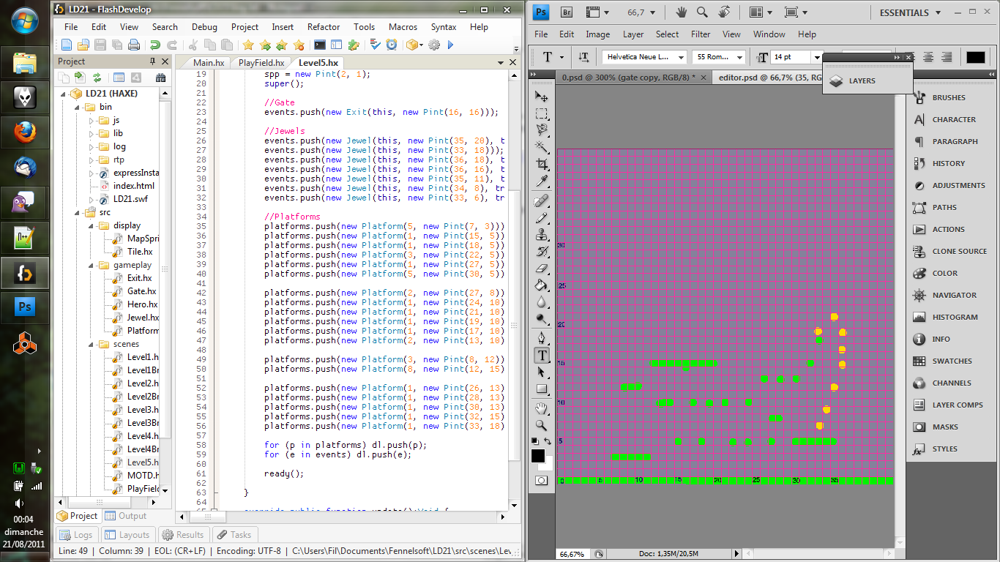
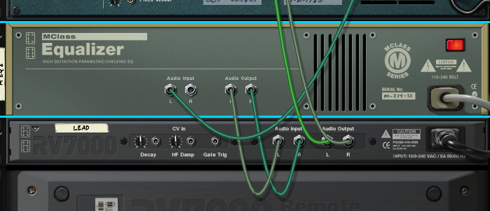

Compte-rendu de Ludum Dare #21

Il y a tout juste une semaine se terminait la 21ème édition du Ludum Dare, une compétition de développement de jeu en temps limité. Les règles sont simples : tous les outils sont autorisés et les participants doivent travailler seul pour produire from scratch un jeu complet en respectant un thème imposé.
Cette année, un total de 599 (!!) jeux ont été réalisés à l'occasion de l'évènement (dont ~90 d'entre eux hors-concours avec un peu plus de personnel ou de temps). Évidemment, je faisais partie de la fête et cet article sera consacré à mon récit des évènements. Voici tout d'abord Ernest, the Plump Adventurer (in trouble), ma participation avec laquelle je vais vous bassiner pendant le reste de cet article.
Avant que je ne démarre mon récit, vous remarquerez l'apparition d'une nouvelle catégorie d'articles sur Les Forges. Cet article est en effet le premier taggé « Ma vie ». J'espère que ma petite vie de développeur sera suffisamment intéressante pour justifier d'autres articles.
Cela fait plusieurs années que je suis de loin l'organisation du Ludum Dare avec intérêt et je me suis décidé à y participer cette année sur un coup de tête, deux jours avant le début de la compétition. J'étais paisiblement en train de voter pour aider à choisir le thème de cette année, et je me suis rappelé comme je m'étais amusé à participer à une compétition de développement en 48 heures sur Flashkit (un forum aujourd'hui tout mort) il y a deux ans. J'étais curieux de voir l'étendue de ma progression de ces deux dernières années, et c'était aussi une occasion de mettre à l'épreuve Bacchus, un moteur de jeux en HaXe que j'ai développé au fil de l'année passée.
L'aventure démarre plusieurs heures avant le coup d'envoi de la compétition (à 4h00 du matin heure française — ouille) par une indispensable séance de ravitaillement au supermarché pour acheter de quoi survivre un weekend sans voir le jour et sans mourir de faim. J'avais prévu de me coucher tôt pour démarrer la compétition de bon matin mais un dîner avec Pierre (qui traduit et publie plein d'articles sur le site que vous lisez en ce moment) et un bout de nuit passé sur Limbo ont quelque peu entamé ma vigueur matinale.
J'ai finalement réussi à basculer hors de mon lit vers 10h00 du matin (soit 6 heures après le début de la compétition. Aïe, plus que 42 heures !) pour aller prendre connaissance du thème de cette édition : « Escape ». Cruelle déception, je m'attendais à un thème plus évocateur comme les excellents « Castle », « Ruins » et « Self-replicating » qui étaient en lice (sans parler du « It's dangerous to go alone, take this ! » de la précédente édition). Après quelques minutes de réflexion à la recherche d'une idée géniale qui avait décidé de ne pas venir, j'ouvrai Photoshop avec dans l'intention de dessiner quelques tiles pour me donner des idées.
Quelques heures plus tard j'avais devant moi assez de pixel-art rudimentaire pour développer un jeu de plateformes dans lequel le héros, un aventurier barbu ambiance Dr. Livingstone (toute ressemblance avec l'apparence et le prénom d'un célèbre Game Designer dont les articles sont régulièrement publiés sur les Forges n'est peut-être pas entièrement fortuite), devrait échapper à une montée d'eau. Pas très original mais au moins ça collait à peu près au thème et c'était réalisable dans les temps. J'étais tout de même un peu naïf d'imaginer que j'aurais le temps de coder un générateur de niveau procédural. La faim commençant à se faire sentir, je me suis offert une petite pause bien méritée.

J'en ai aussi profité pour faire un tour sur le canal IRC dédié à la compétition qui avait près de 400 connectés pendant le weekend. C'est non seulement très impressionnant mais aussi motivant ! J'ai passé mon après-midi à coder le gros des mécaniques de jeu : déplacement du personnage et sauts, plateformes, collisions, merdouilles brillantes qui font gling gling à ramasser, fin de niveau et mort du joueur. Aux environs de minuit j'avais de quoi commencer à faire un jeu, et je crois que c'est aussi pendant cet après-midi que j'ai animé le personnage (et l'eau qui monte). Évidemment il n'était pas question de se coucher si tôt, et j'ai passé ma nuit à faire du Level Design. Avec le recul, je réalise que c'est une activité où je n'excelle pas et il aurait sans doute été bon de lui consacrer une heure où j'étais plus réveillé (et moins alcoolisé). Comme je n'avais pas d'éditeur de niveaux sous la main, il a fallu ruser pour designer rapidement. J'ai mis en place un fichier Photoshop avec une grille et des unités de mesure dans lequel je dessinais mes niveaux « au brouillon » avant de les intégrer « en dur » dans le jeu. Voici à quoi ressemblait mon écran à ce moment :

J'ai fini par aller me coucher vers 5 heures du matin après avoir fait les 10 premiers niveaux du jeu et l'écran titre (alors que je m'endormais sur mon clavier). Cinq heures de sommeil plus tard, branle-bas de combat pour reprendre le développement (après un copieux petit-déjeuner). J'ai repris mes méthodes de la veille pour faire 5 niveaux de plus (pour un total de 15). Je voulais en faire 20 mais j'étais complètement à cours d'idées de niveaux et ça risquait de se voir.
Je me suis donc consacré à une autre fonctionnalité : rajouter des torches (décoratives) dans les niveaux. Problème, je n'avais toujours pas d'éditeur de niveaux et je n'avais pas gardé la plupart de mes brouillons sous Photoshop. J'ai une fois de plus eu recours à une solution un peu ridicule mais efficace. J'ai fait une version du jeu dans laquelle le joueur ne risquait pas de mourir noyé et où il pouvait sauter à l'infini. J'ai ajouté une touche pour enregistrer dans les log la position actuelle du personnage et je me suis ensuite baladé en volant dans les niveaux en appuyant sur cette touche magique à chaque endroit où je comptais placer une torche. Une demi-heure plus tard l'opération était terminée.
Je me suis offert une nouvelle pause IRC pour faire tester mon prototype et pour en essayer quelques-uns faits par mes « concurrents » (que j'ai ensuite eu le plaisir de retrouver finis à l'issue de la compétition). Les retours étaient plutôt positifs et plein de bonnes idées (comme celle de la jauge d'oxygène, rajoutée quelques heures plus tard). Seulement voilà, il était déjà près de 18 heures et mon jeu était toujours silencieux. J'ai réalisé quelques bruitages avec BFXR et je me suis lancé dans la composition de musiques avec mon synthétiseur et Reason. Le style du jeu et les contraintes de temps m'ont imposé un style « chiptune » dans lequel j'ai assez peu d'expérience mais je suis assez content du résultat, surtout au regard du temps passé (~3 heures pour ~3 minutes de musique, c'est assez rapide par rapport à mes standards). Un peu comme dans tout le reste du jeu, j'ai laissé passer quelques détails plus ou moins importants comme en témoigne la capture d'écran de Reason ci-dessous. Bizarrement, le thème de fin de jeu a un petit problème de stéréo :

Grâce à un ami qui a testé le jeu plusieurs fois (le pauvre) pendant que je composais les musiques, j'ai pu corriger un paquet de bugs avant de finalement soumettre mon jeu quelques minutes avant la deadline à 4 heures du matin. Une fois le jeu envoyé, j'ai décapsulé ma dernière bière et la tension à commencé à retomber. Sans que je m'en aperçoive, j'avais focalisé toute mon attention des 48 heures précédentes sur le jeu et plus rien d'autre n'existait dans mon esprit. C'est un sentiment assez incroyable, un peu comme s'endormir le soir et se réveiller le matin en découvrant qu'on a fabriqué un jeu entier pendant son sommeil. Rien que pour ce sentiment d'accomplissement inattendu, je recommande à tous ceux qui le pourront de participer à la prochaine édition de Ludum Dare (en décembre prochain).
Mon jeu semble plutôt bien reçu par la communauté des participants. Beaucoup ont fait des remarques très justes sur les mécaniques de jeu (mort trop pénalisante, double saut absurde car le saut « simple » ne sert jamais, etc.) et le Level Design qui pêche un peu par moment. Les graphismes et la musique semblent être les points les plus appréciés, ce qui est assez ironique vu que je me considère avant tout comme un programmeur.
J'ai aussi tenté d'envoyer le jeu à ma famille pour voir ce qu'ils pouvaient en faire. Hélas, les non-joueurs se sont retrouvés bloqués très vite (niveau 1, 2 ou 3) par manque de dextérité tandis que les joueurs occasionnels ou réguliers sont parvenus au bout du jeu plus ou moins laborieusement. Tout cela ne fait que confirmer que l'on ne rend jamais un jeu trop simple. Quelques heures de tests supplémentaires m'auraient aidées à ajuster la difficulté plus finement je suppose. La tendance naturelle est toujours à faire trop difficile.
Au final, mon jeu est loin d'être parfait mais je suis très fier (vous savez que j'aime m'envoyer des fleurs) d'avoir accompli tout ça en 48 heures. J'ai fait un jeu complet, j'ai mis mon moteur à l'épreuve, j'ai participé à un évènement fantastique et j'ai foutu en l'air toute chance d'être en forme Lundi matin. Je n'ai qu'une hâte c'est de recommencer !
Je ne vais évidemment pas vous laisser filer sans parler de quelques autres jeux réalisés pour la compétition. Parmi mes préférés pour le moment, citons :
- Stratus, un court jeu d'aventures Steampunk
- Mouse Trap, un jeu où l'on incarne une souris tourmentée dans un labyrinthe
- Flee Buster, 3 jeux en un (avec un petit côté Wario Ware)
Bon jeu à tous, en attendant de vous voir participer à la prochaine édition !
Ajouter un commentaire
Commentaires

Cool, je vais y jouer là !
Oui mais non, je sais pas encore programmer :/ à moins qu'il soit possible de passer par RPG Maker ou Game Maker (Ou autre logiciel du genre) aucune chance que je puisse me lancer pour le moment…
Et niveau graphisme ça risque aussi de coincer un peu (même si je suis déjà plus fort qu'en programmation)
Dernier problème et pas des moindres : Le temps. Je doute que mes parents me laissent accéder à l'ordinateur pendant tout un week end comme ça, et encore moins la nuit (car oui j'ai oublier de dire que je suis mineur, 16 ans quoi…)

@LittleGamer > Faut pas attendre d'avoir le niveau, faut se lancer! Le lien mort a été updaté, merci.
Le lien vers le jeu à l'air mort :(
Est-il encore possible d'y jouer aujourd'hui ? Et où ? ça à l'air très sympa comme petit jeu, tout comme les deux autres jeux que tu as fait pour le Ludum Dare que tu as présentés sur le site, j'y ai jouer ils sont vachement bien :D
J'espère avoir le niveau pour participer un jour !
Merci pour vos commentaires chaleureux =)
@Remiz > C'est un bug connu, qui n'a hélas pas été repéré avant la deadline et qui a pris 10 secondes à corriger. C'était dû au fait qu'on pouvait mettre le jeu en pause pendant la transition d'écran (l'animation avec les losanges). Il suffisait heureusement de remuer sa souris pour rétablir les choses.
@Tipyx > Ouip, tout sous Photoshop. Je compte bien participer de nouveau en Décembre =)
Ah Ludum Dare, c'est à chaque fois une expérience incroyable !
Je le recommande à ceux qui sont un peu fous, car il faut l'être, mais surtout il faut savoir que c'est un gain d'expérience dingue. Et c'est des fois terrain fertiles pour des idées de nouveaux projets.
Les "Mini-LD" sont aussi très sympa, moins stressants mais tout aussi prenants si on le souhaite, et là l'ambiance IRC est en générale plus cool (on retrouve les habitués).
En passant, ton jeu mérite amplement sa 15e place !

Bravo pour l5ème place, c'est excellent ! Dis moi, tu utilisais quel logiciel pour le graphisme ? EDIT : Tu n'as utilisé que Photoshop ? Encore Bravo ! P.S. : Tu vas reparticiper en Decembre ?
Cet article est foutrement intéressant. J'avais également participé à un concours 48h sur le forum Developpez.net, et là, tu m'as aidé à retrouvé cette drôle de sensation qu'on peut avoir quand on se focalise non-stop sur un jeu pendant 48h. (en plus… la photo de ton repas me donne faim…)
Par contre, j'arrive à faire bugger le jeu (c'est à dire que l'écran de transition de "s'ouvre" pas totalement au moment de commencer le niveau, et l'eau ne monte pas). ça fait qu'on vois que de petits points à l'écran… C'est assez bizarre…
En tout cas y a un truc qui est sûr, en Décembre… Je participe!

Félicitations pour ta quinzième place :D
Bon c'est sur en décembre je participe…. @alchymi
@Tipyx > J'aimerais bien faire une version plus élaborée mais j'ai trop de projets en chantier pour le faire dans un avenir proche.
@Zoneur > Merci !
@jet25 > Très bien vu la référence à Lode Runner. Je n'y pensais pas sur le coup mais c'est un jeu qui m'a beaucoup marqué (parce que c'était de loin mon préféré quand j'étais tout petit). Nom nom nom était une référence aussi bien à Cho'Gath qu'à ce genre d'images : Nom Nom Nom

C'est vraiment pas mal, j'aime bien.
Graphismes Les couleurs sont bien choisis, elles rendent l'ensemble ni trop vif ni trop terne. L'eau est vraiment bien réalisé.
Jouabilité Le saut aurait effectivement été inutile s'il n'y avait pas le double saut, et encore atteindre la plate-forme suivante de justesse est tellement récurent que c'est limite frustrant quant on finit par se rater.
Durée de vie J'ai arrêté au niveau 12 car ça devenait répétitif. J'ai bien aimé le petit stage bonus :)
Bande son La musique est simple mais agréable. Pour un jeu en pixel, ça colle bien. Les bruitages sont corrects.
Scénario C'est marrant, ça me fait un peu penser à Lode Runner. Se dépêcher de récupérer les trésors et d'atteindre la sortie.
(Le déjeuner des héros ? Et le "Nom nom nom !", référence à Cho'gath, n'est-ce pas ? :)
Chapeau pour ton jeu, amusant et j'aime beaucoup les graphismes ainsi que la musique qui n'est à mon sens pas remarquable mais qui a le mérite de bien coller à l'ambiance et SURTOUT de ne pas paraitre répétitive/saouler :) Petits bugs (je suis passé au travers d'une plateforme, j'ai fait un méga saut en sautant au moment je touchais le bord d'une plateforme) mais franchement chapeau, je participerais surement quand je serais meilleur en programmation :p Mon tout premier commentaire sur ce site et j'en profite pour dire que j'adore: tant le design que les sujets traités et leur façon de l’être :D
Félicitations ! Est ce que tu va le continuer ou c'était juste pour la compét' ?
@Gaetz > La compétition en 48h est en solo, mais il y a en même temps une version à plusieurs en 72h (la catégorie "jam").
HaXe n'est pas un framework mais un langage de programmation open-source crée par Nicolas Canasse à la R&D de Motion-Twin. Fort heureusement, il n'est pas seul à le maintenir =)

Bravo à toi !
J'avais entendu parler de cette compétition. Elle se fait nécessairement en solo ?
Haxe, c'est bien le framework Flash développé par les gens de Motion Twin ?
Bravo pour la performance, il fallait le faire en si peu de temps. Concernant le jeu, effectivement, le double saut est assez pénalisant. Le fait qu'il soit jouable in Navigateur est un plus ! En tout cas, j'admire le fait que tu ais tout fait toi même ! J'avais fait un peu d'action Script mais je n'ai jamais été convaincu. Je suis aussi plus impressionné par les graphismes et musiques :) Pourras-tu un jours expliqué un peu ce qu'est ton framework et en quoi est-il intéressant dans la réalisation de jeux ? En tout cas Bravo ! Et bonne continuation.